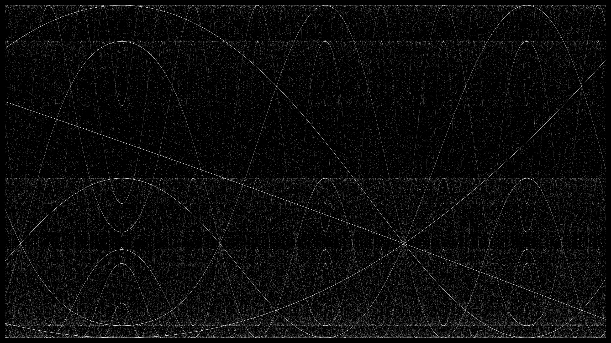

Méandres logistiques
La semaine dernière, j’apprenais l’existence de la suite logistique et cherchais à en comprendre le fonctionnement. Depuis, j’ai visualisé le champ de cette fonction de diverses manières, afin de mieux voir ses propriétés et ses potentielles applications artistiques. Le code écrit pour réaliser le matériel ci-dessous peut-être lu et téléchargé sur GitHub.
Mouvements sinueux
Comme je suis habitué à m’amuser avec des fonctions trigonométriques, j’ai d’abord pensé à transformer le résultat de la suite logistique avec les fonctions sinus et cosinus. Le code de cette expérience est contenu dans le fichier sketch8b.js dans le dossier GitHub du projet. La première image ci-dessous est divisée en 25600 lignes verticales (représentant la valeur x de 0 à 25599). À chacune de ces 25600 positions de x, une valeur t est calculée ainsi :
Pour chaque valeur x, 200 couples (x,y) sont formés par un système dynamique indépendant. Le système est initialisé par la valeur tx, qu’on renomme c0. La valeur n représente l’index de récurrence du système. Le système entier est calculé ainsi :
Il en résulte l’image ci-dessous, dans laquelle on voit une structure très régulière et qui semble se répéter infiniment. Les lignes ondulantes ont certaines qualités en commun avec les ondes sinusoïdales, mais n’en sont pas.
Vers les profondeurs
J’étais très curieux de me promener à l’intérieur de ces résultats. Pour ce faire, j’ai conçu une animation Le code de cette animation se trouve dans le fichier sketch8.js sur GitHub. dans laquelle tous les principes détaillés ci-dessus sont utilisés, à une importante différence près. La valeur tx, qui s’exprimait jusqu’ici tx=0.012+x×0.000001, s’exprime maintenant ainsi :
Cette nouvelle variable a représente le numéro d’image de l’animation, qui commence à 1 et augmente de 1 à chaque nouvelle image. Ce changement dans tx a pour conséquence de réduire de façon exponentielle, d’image en image, l’incrément de la valeur t qui est envoyée à chacun des 25600 systèmes dynamiques indépendants. D’une certaine façon, c’est comme si nous nous déplacions de plus en plus lentement à l’intérieur de la suite logistique. On peut aussi dire que nous « étirons » les résultats de la suite logistique horizontalement.
L’animation ci-dessous, qui résulte de tout ça, illustre de façon très claire les propriétés fractales de la suite logistique : à chaque image, nous observons une part de plus en plus petite de cette équation, cependant les mêmes formes apparaissent à toutes les échelles.
À la fin de l’animation, on ne voit plus que des lignes claires et le « bruit » qui était présent se dissipe. Ceci n’est pas dû au fait que nous sommes arrivés à la « fin » de la suite logistique, mais plutôt au fait que le programme que j’ai écrit dessine un nombre limité de points pour chaque image, et qu’il faudrait dessiner beaucoup plus de points à cette échelle pour continuer à voir toutes les structures fractales qui sont encore existantes.
Brisures et irrégularités
Une autre chose que j’étais très curieux de faire lorsque j’ai vu le motif créé par la fonction sinus et la suite logistique était de le briser. J’utilise le terme briser d’une façon très libre et vague. Je considère que je « brise » un objet mathématique lorsque j’en altère certaines propriétés de façon arbitraire afin d’observer les résultats. Je trouve souvent que briser un objet mathématique aide à mieux le connaître — la façon par laquelle un objet se brise, si elle ne révèle pas nécessairement comment il s’est formé, est tout de même propice à révéler certaines propriétés de sa structure.
La première image ci-dessous a été créée en croisant le résultat de deux séquences de nombres (t et t2) obtenues par itérations dans la suite logistique à partir de points de départs différents. Voici la partie du code dans lequel ces calculs sont faits Le code complet se trouve dans le fichier sketch3.js.:
function draw() {
for (let j = 0; j < 20; j++) {
let f = drawCount * 0.5;
t = startT + increment;
t2 = startT2 + increment;
for (var i = 0; i < 100; i++) {
t = logisticMap(t);
t2 = logisticMap(t2);
x = sin(t2) * f;
y = sin(t * t2) * 1100;
ellipse(x, y, 0.5);
}
increment += 0.00001;
}
drawCount++;
}J’ai ensuite réalisé une autre animation de « plongée en profondeur » avec une de ces « suites logistiques brisées ». Ici, alors que je n’utilisais précédemment que des suites de nombres calculées de façons simples et élégantes, comme ceci :
Contexte
Cette note de blog fait partie de mon projet de recherche Vers un cinéma algorithmique, démarré en avril 2018. Je vous invite à consulter la toute première note du projet pour en apprendre davantage.